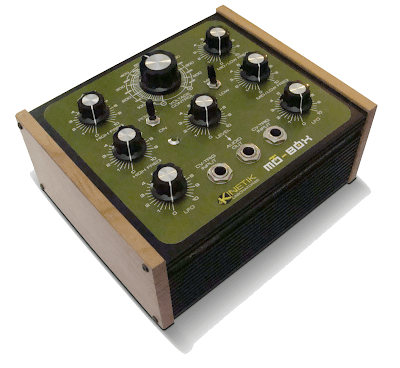
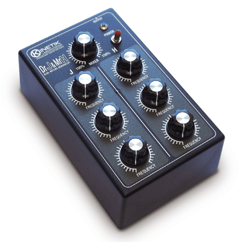
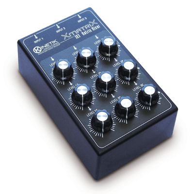
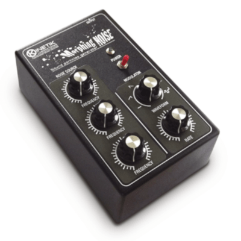
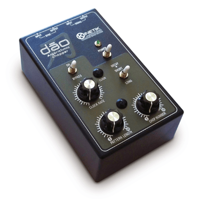

From 2008 to 2019 I collaborated with Claudio Granzieri in a project that involved the construction of special sound machines.
The sound generators we have designed and built can be described as drone/noise boxes. Our research was oriented to recreate the sounds heard in the soundtracks of science fiction films of the fifties and sixties. At the same time we were looking for new timbres that could represent the randomness of nature, its mutability and harshness.
Mot-Box is a sound generator, with four audio oscillators, two lfos and two 1/4" jack inputs, available to connect external analog gear. All in a rugged box, with cherry wood side plates. It produces sounds varying from drones to helter-skelter noises. 
The Harsh Noise Generator is the ideal sound source for your effect chain and is an open hardware project!

Dr.Jekyll & Mr.Hyde is formed by two distinct mixable circuit voices, the Jekyll's one is warm, firm and comforting, the other is harsh, noisy and sometimes unpredictable: the Hyde side. Each voice has three oscillators with respecting FREQUENCY control.

Gort the Robot is constituted by four frequency controlled oscillators, combined through pseudo ring modulator circuits.
The square wave oscillators can run freely (Stop Mode) or alternatively gated by the 16 steps internal sequencer (Activate Mode). In the latter case each step generates different oscillators combinations and therefore different sounds, varying in tone and timbre.

Xmatrix is a passive matrix mixer with 3 inputs and 3 outputs. It can be used to distribute signals to different effect chains and amplification systems or to control the gain of feedback loops when used in no-input configurations. Xmatrix routes multiple input signals to multiple outputs, allowing different mixes from a common set of signals.

ILL-LOGIC is a stand alone compact system with semi-modular structure. It can be used to generate complex sound textures. Using 4mm banana plugs it offers great functional flexibility and small footprint. It has 12 knobs, 22 connection points, two switches and a red led that reflects the behavior of the noise generator.
The input plugs accept any output allowing you to experience the most of its sonic potential.

Morphing Noise combines a noise source sound generator and a modulator circuit. The NOISE SOURCE circuit is formed by three oscillators modulating each other and generates similar sounds to those obtainable with cross-modulation technique. Its sonic character far exceeds the typical white or pink noise sources.

The PROTEAN Motion Texture Source is a compact device that incorporates three independent sound generators for the production of a wide variety of sonic environments with a ever changing expressive vitality.
All sound parameters can be modified through direct manipulation of the knobs allowing a direct, fast and intuitive performance.
The sound generators have complementary timbral characteristic covering all the frequency spectrum and may also be modulated by the two low frequency oscillators implemented in the circuit, generating hypnotic sounds which evolve over time.
Protean has three independent outputs, each with its own output level to allow further manipulation using external effects and may also be used in mono mode when in the needs of a reduced setup. The project has been released as open hardware in 2020.

Dao is a pattern controlled gater capable of turning every signal connected to the INPUT JACK into a rhythmic sequence, passing or muting it towards the OUTPUT JACK. The rhythm patterns are based on the position of two knobs, PATTERN LENGTH and CHOP NUMBER, allowing an intuitive use of the device. Dao rhythm patterns are generated using the Euclidean algorithm.
